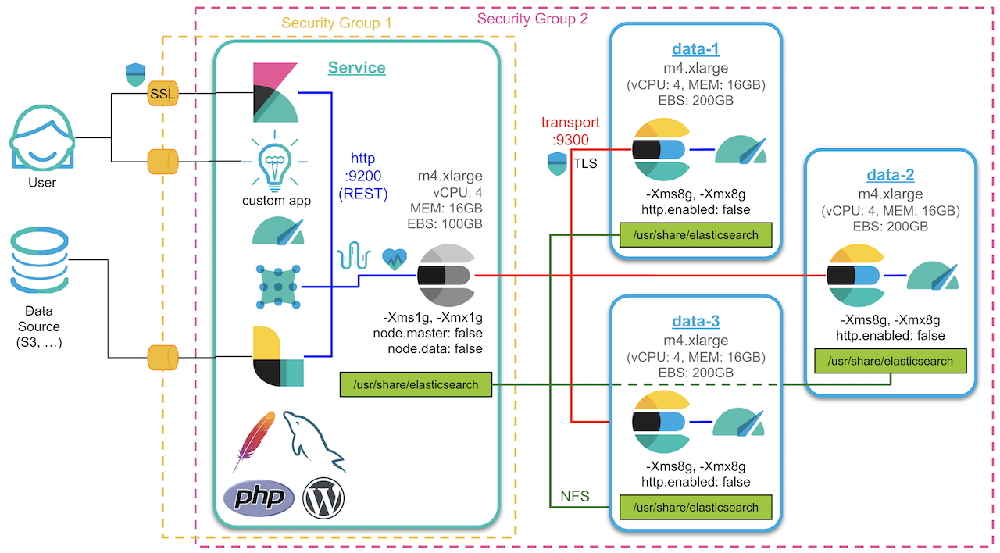
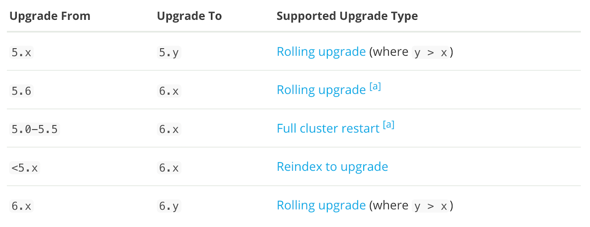
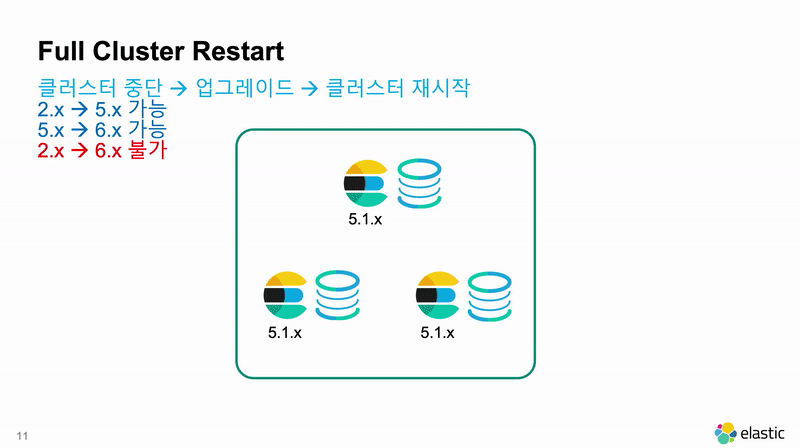
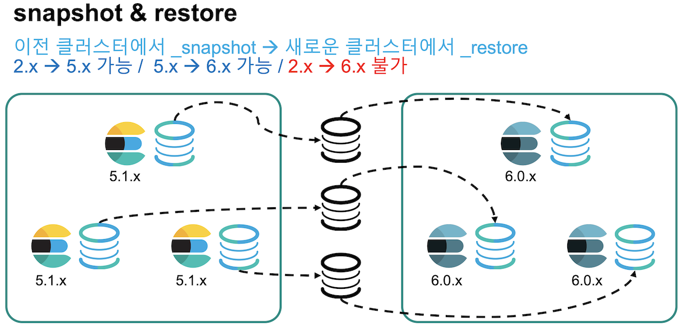
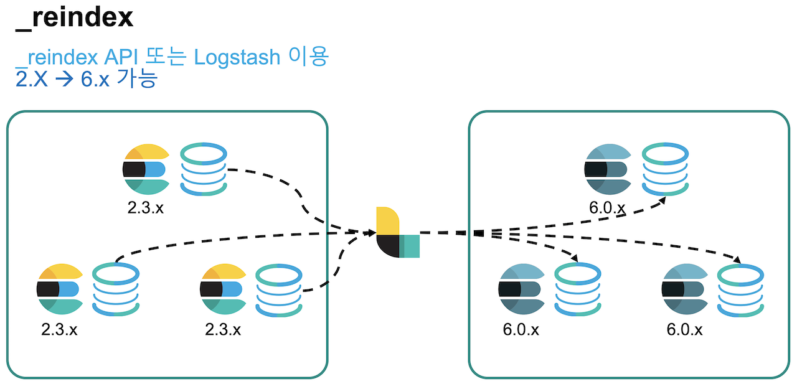
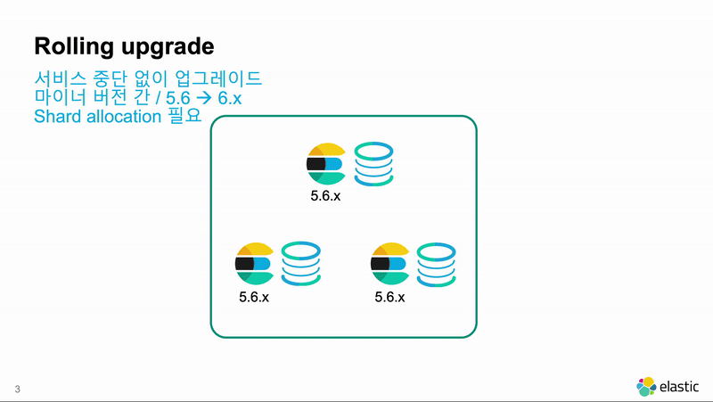
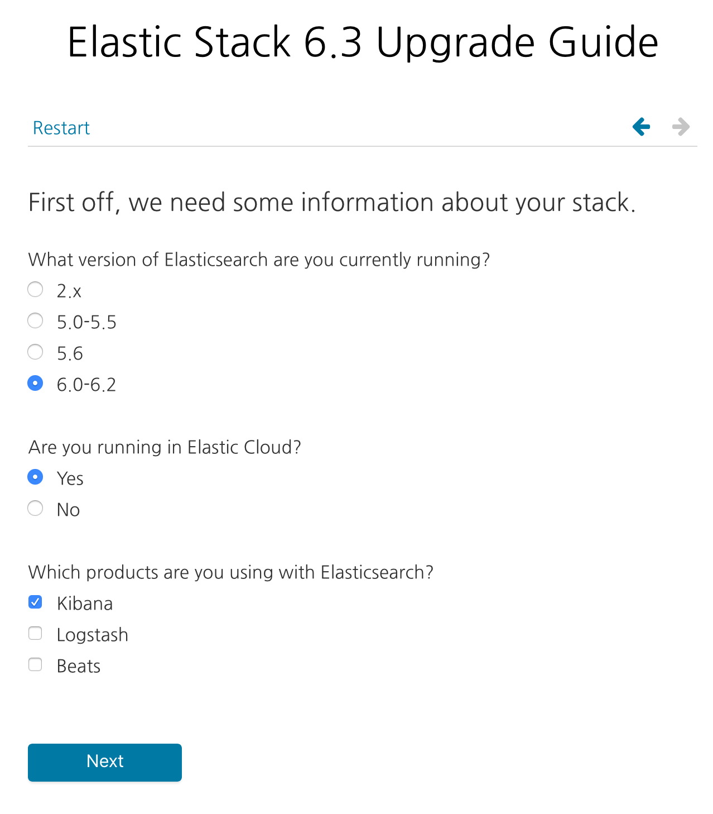

얼마 전에 Elastic Stack 6.5 가 출시되었습니다. 6.5 는 마이너 업그레이드이지만 상당히 방대한 새로운 기능들을 포함하고 있습니다. 6.5 에 대한 자세한 내용들은 출시 블로그에서 확인 바랍니다.
https://www.elastic.co/kr/blog/elastic-stack-6-5-0-released
Elastic Cluster 구성 시리즈에서 구성했던 시스템을 계속해서 제 여러 용도의 데모 서버로 사용하고 있습니다. 6.1 버전으로 처음 설치 한 이후에 가끔 한번씩 새 버전이 나올 때 마다 업그레이드를 해 주고 있었습니다. 이번에도 6.5.0 이 나오면서 이전에는 6.4.2 버전이었 던 것ㅇ르 새로 나온 6.5.1로 업그레이드를 하였습니다. 롤링 업그레이드 하는 전체 과정은 동영상으로 기록했습니다. 포스트 맨 하단에 있습니다.
데모 서버의 컨셉 아키텍쳐는 아래와 같습니다. 총 4개의 서버에 각각 Elasticsearch 노드를 하나씩 설치했습니다. 3개는 데이터 노드로 사용하고 하나는 Coordinate Only 노드로 설정해서 서비스 노드로 사용합니다. 서비스 노드가 있는 서버에는 Kibana, Logstash, Filebeat, Metricbeat 그리고 테스트를 위해 PHP, MySQL, Apache 웹 서버를 깔고 워드프레스 블로그를 설치 해 놓았습니다.

Elastic Stack 업그레이드에 대한 내용은 아래의 공식 도큐먼트에 자세히 나와 있습니다.
https://www.elastic.co/guide/en/elastic-stack/current/upgrading-elastic-stack.html
Elasticsearch 를 업그레이드 하는 방법은 크게 다음의 3가지로 구분할 수 있습니다
1. Full Cluster Restart
2. Cluster Re-Index
3. Rolling Upgrade

2.x –> 5.x 와 같이 메이져 버전으로 업그레이드를 할 때는 롤링 업그레이드가 불가능합니다. 따라서 전체 클러스터를 재시작해야 합니다. 마이너 버전 끼리만 롤링 업그레이드가 가능하나 예외적으로 5.x 의 마지막 마이너 버전인 5.6.x 에서는 6.x 버전으로 롤링 업그레이드가 가능합니다.
다음은 각각 업그레이드에 대한 설명입니다.
참고로 Elasticsearch 는 3, 4 메이져 버전이 없고 1.x > 2.x > 5.x > 6.x 순서로 릴리즈가 되었습니다.
Full Cluster Restart
Full Cluster Restart 는 말 그대로 모든 노드를 내렸다가 프로그램을 업그레이드 하고 다시 전체 재시작을 하는 방법입니다. 클러스터 전체 재시작이 일어나기 때문에 필연적으로 운영 시스템의 가동 중단 시간이 발생하게 됩니다.
데이터가 저장 된 경로의 내용들을 그대로 두고 elasticsearch를 새로 설치 한 다음에 path.data 경로만 기존 데이터 경로로 설정하여 재실행 하면 업그레이드가 끝납니다. Unix 의 경우는 path.data 경로의 심볼릭 링크를 변경해서 업그레이드 하기도 합니다.

다만 Full Cluster Restart 라도 2개 단계 이상의 상위 메이져 버전으로는 업그레이드가 불가능합니다. 2.x 버전의 운영 클러스터를 6.x 버전의 운영 클러스터로 업그레이드는 할 수 없습니다. 2개 단계 이상으로 업그레이드를 하기 위해서는 Cluster Re-Index를 해야 합니다.
그리고 2.x 에서 생성한 인덱스를 5.x 으로 full cluster restart 해서 유지한 경우에도 이 인덱스는 6.x 으로 업그레이드가 불가능합니다. 5.x 클러스터에서 사용중이지만 2.x 에서 생성된 인덱스는 5.x 클러스터 안에서 다시 재색인을 해 주어야 합니다.
이전 버전에서 찍은 스냅샷을 새 버전에서 restore 해서 업그레이드 하는 방법도 있습니다. 이 경우에도 색인이 끝난 샤드의 세그먼트 파일을 그대로 복사하는 것이기 때문에 내부적으로는 path.data 를 유지한 Full Cluster Restart 방식과 유사하게 동작합니다. 따라서 2개 단계 이상의 버전에서는 스냅샷을 불러올 수 없습니다.

Full Cluster Restart 의 특징을 요약하면 다음과 같습니다.
- 운영 시스템의 가동 중단 시간이 필연적으로 발생합니다.
- 2 단계 이상 버전으로 업그레이드가 불가능합니다.
- 스냅샷 & 복원 과정도 Full Cluster Restart 와 동일합니다.
Cluster Re-Index
2.x 에서 6.x 와 같이 두개의 메이져 버전을 업그레이드 하는 경우에는 클러스터를 새로 구성하고 이전 클러스터에서 새로운 클러스터로 데이터를 재색인 하는 방법을 사용할 수 있습니다. 미리 클러스터를 이중화 시켜서 데이터의 재색인이 끝난 뒤 클라이언트 프로그램이 새로운 Elasticsearch 클러스터를 바라보도록 변경하기만 하면 가동 중단 시간도 거의 없이 안전한 업그레이드가 가능합니다. 마치 Blue Green 배포 기법과 유사한 개념입니다.
인덱스에 _source 를 저장하지 않도록 설정했으면 그 인덱스는 재색인이 불가능 합니다. 이 경우 원본 데이터에서 다시 가져오는 방법을 써야 합니다.
이전 클러스터의 데이터를 새로운 클러스터로 재색인 하기 위해서는 Logstash 를 사용하거나 _reindex API를 활용합니다.

Logstash 를 사용하는 방법은 다음과 같습니다.input {
elasticsearch {
hosts => "es.production.mysite.org"
index => "mydata-2018.09.*"
query => '{ "query": { "query_string": { "query": "*" } } }'
size => 500
scroll => "5m"
docinfo => true
}
}
output {
elasticsearch {
index => "copy-of-production.%{[@metadata][_index]}"
document_type => "%{[@metadata][_type]}"
document_id => "%{[@metadata][_id]}"
}
}
docinfo => true 설정을 하면 document_id 까지 모두 동일하게 재색인을 합니다. 더 자세한 설명은 Logstahs Elasticsearch input 도큐먼트를 참고하세요.
원격 클러스터간 _reindex API 를 사용하는 방법은 다음과 같습니다.POST _reindex
{
"source": {
"remote": {
"host": "http://otherhost:9200",
"username": "user",
"password": "pass"
},
"index": "source",
"query": {
"match": {
"test": "data"
}
}
},
"dest": {
"index": "dest"
}
}
원격 클러스터간 _reindex API를 사용하려면 elasticsearch.yml 파일에 다음과 같이 reindex.remote.whitelist 설정이 되어 있어야 합니다.reindex.remote.whitelist: "otherhost:9200, another:9200, 127.0.10.*:9200, localhost:*"
_reindex 는 기본적으로 document_id, @timestamp 값 까지 동일하게 복사합니다. 더 자세한 설명은 _reindex API 도큐먼트를 참고하세요.
Cluster Re-Index 의 특징을 요약하면 다음과 같습니다.
- 2 단계 이상의 버전으로 바로 업그레이드가 가능합니다.
- 클러스터를 별도로 준비를 위한 비용이 발생합니다.
- 데이터를 새로 색인해야 하기 때문에 다른 업그레이드 방법들과 비교하여 시간이 오래 걸립니다.
- 비교적 안정적으로 가동 중단 시간 없이 업그레이드가 가능합니다.
- _source 가 저장되어 있지 않으면 사용이 불가능합니다.
Rolling Upgrade
6.4.1 -> 6.5.1 같이 마이너 버전 간에는 롤링 업그레이드가 가능합니다. 롤링 업그레이드는 클러스터에 있는 노드들을 하나씩 내리고 업그레이드 한 뒤 다시 시작해서 업그레이드를 하는 방식입니다. Elasticsearch 노드들 간에는 메이져 버전이 같으면 마이너 버전이 달라도 클러스터 구성이 가능하기 때문에 사용 가능한 방법입니다. 클러스터 전체를 재시작 하지 않기 때문에 가동 중단 시간이 발생하지 않습니다.

원래는 마이너 버전 간의 업그레이드이지만, 5.6.x 부터는 메이져 버전의 가장 마지막 버전은 그 다음 메이져 버전으로도 롤링 업그레이드가 가능합니다. 메이져 버전 간에 롤링 업그레이드를 할때는 Kibana에 제공되는 마이그레이션 도구를 이용해서 이전 버전의 인덱스들이 새 버전으로 마이그레이션 했을 때 문제 없이 실행이 되는지를 체크하는 것이 안전합니다.
6.2 이전의 버전과 6.3 이후 버전의 경우에도 배포판의 방식에 큰 변경이 있었기 때문에 별도 가이드 도구가 제공됩니다. 아래 사이트에서 확인이 가능합니다.
https://www.elastic.co/products/upgrade_guide

그리고 예전에 작성된 Elastic 6.3 에서 상용 라이센스 활성 블로그포스트도 참고하시기 바랍니다.
롤링 업그레이드는 다음 순서로 진행됩니다. 자세한 내용은 Rolling upgrades 도큐먼트 에 있습니다.
Shard Allocation 중지 : 노드를 중단했을때 샤드들이 재배치 되지 않도록 다음 명령을 실행합니다.
PUT _cluster/settings
{
"persistent": {
"cluster.routing.allocation.enable": "none"
}
}Sync Flus 실행 : Primary - Replica 샤드들 간의 세그먼트 저장 상태를 동기화 시켜줍니다.
POST _flush/synced
노드 1개 중단 : 중단하고 나면 클러스터 상태가 Yellow 로 됩니다.
- 중단한 노드 업그레이드 : 이 때 설치된 플러그인들도 모두 제거하고 새 버전에 맞게 새로 설치 해 줘야 합니다.
중단한 노드 재시작 : 아래 명령으로 노드가 정상적으로 실행됬는지 확인합니다.
GET _cat/nodes
Shard Allocation 재가동 : unassigned 된 샤들이 새 노드에 다시 배치되도록 다음 명령을 실행합니다.
PUT _cluster/settings
{
"persistent": {
"cluster.routing.allocation.enable": null
}
}클러스터 상태가 Green 이 될 때 까지 기다립니다. 클러스터 상태는 아래 명령으로 확인이 가능합니다.
GET _cat/health
클러스터 상태가 Green이 되고 나면 다시 1번 과정 부터 모든 노드들에 돌아가면서 실행을 반복합니다.
Rolling Upgrade 의 특징을 요약하면 다음과 같습니다.
- 마이너 버전 혹은 메이져의 마지막 버전에서만 사용이 가능합니다.
- 운영 시스템의 가동 중단 시간이 발생하지 않습니다.
- 절차가 복잡하여 플러그인 미설치, 샤드 중단 미실행 등의 실수나 unassign 중 새로 색인된 샤드 등이 있을 때 대규모의 샤드 재배치가 발생하여 시스템에 부하가 발생 할 위험이 있습니다.
아래는 처음 언급한 데모 환경을 6.4.2 에서 6.5.1로 업그레이드 하는 과정을 녹화 한 영상입니다. 앞의 롤링 업그레이드 과정을 실행하고 있으니 참고 해 보시기 바랍니다.